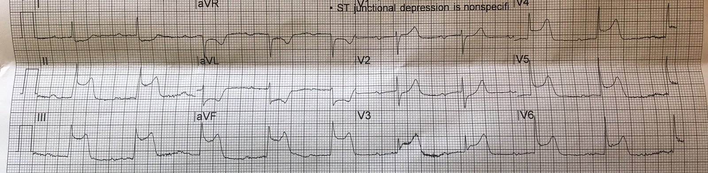
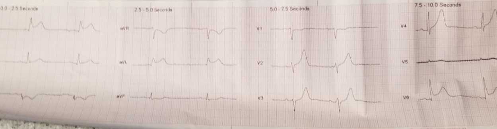
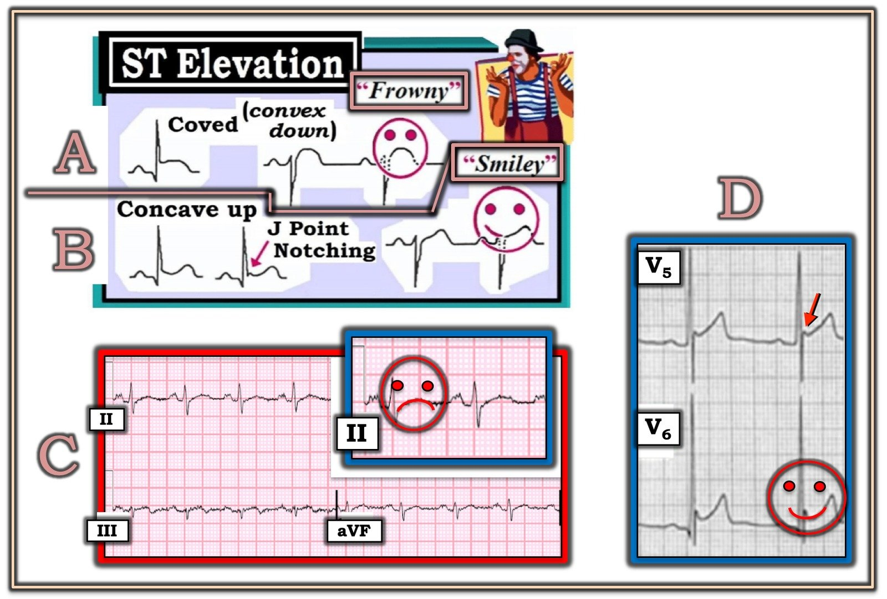
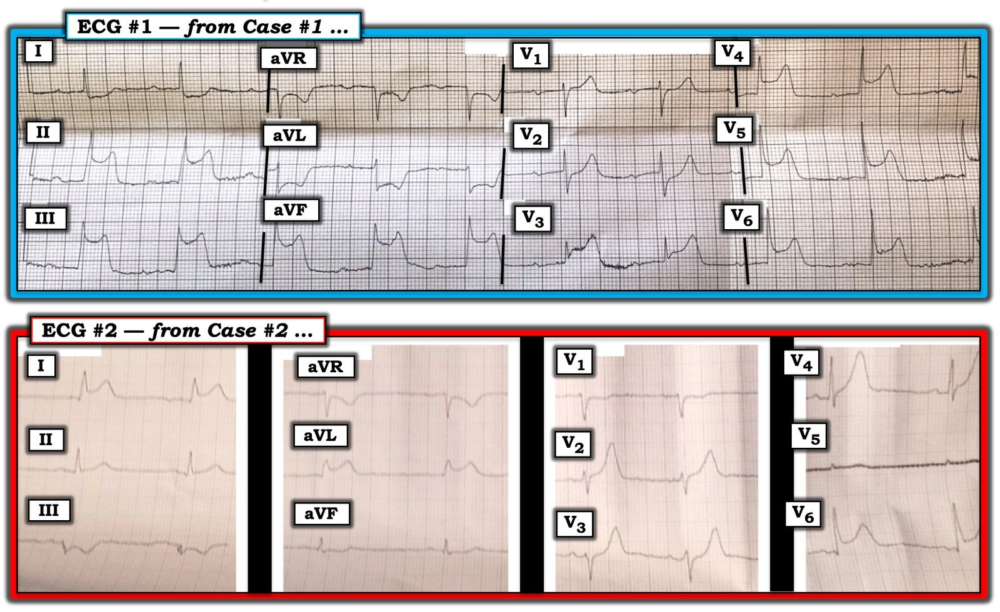

22/06/2019 — Đoạn ST dạng lõm chỉ là một mảnh nhỏ trong bức tranh ghép của việc nhận diện hình ảnh
Bản dịch tiếng Việt của bài "ST segment concavity is just one small piece of the puzzle that is pattern recognition" – Dr. Smith’s ECG Blog. Giữ nguyên toàn bộ 6 hình ảnh của bản gốc.
Tác giả: Pendell Meyers
Dưới đây là hai ví dụ nổi bật trong cùng một ca trực, cho thấy “quy tắc” chuẩn về hình thái đoạn ST dạng “mặt cười” hay lõm hướng lên trên có thể sai lầm đến mức nào.
Ca bệnh 1.


Tôi nhận được điện tâm đồ này qua đường truyền từ xa (telemetry) từ một xe cứu thương ở cách xa bệnh viện của chúng tôi. Có một trung tâm thông tim khác gần hơn cơ sở của chúng tôi, nên chúng tôi thống nhất rằng họ nên đến đó và khuyên họ kích hoạt phòng thông tim ngay lập tức. Trước khi cuộc trao đổi kết thúc, bệnh nhân bị ngừng tim do rung thất (VF) và họ cúp máy. Tôi không thể liên lạc lại với họ để biết kết cục.
Ca bệnh 2.


Tôi cũng nhận được bản ghi này qua đường truyền từ xa, và một lần nữa chúng tôi đồng ý với kế hoạch của họ là đến trung tâm thông tim gần nhất, và họ đã kích hoạt quy trình phòng thông tim. Bệnh nhân được phát hiện tắc LAD đoạn gần, nhưng không có thêm chi tiết nào khác về kết cục.
Ở trường y, chúng ta được dạy rằng hình thái đoạn ST lõm hướng lên là một đặc điểm của ST chênh lên lành tính, viêm màng ngoài tim, v.v.
Trên thực tế, 40-50% các ca tắc LAD cấp có hình thái đoạn ST lõm hướng lên ở tất cả các chuyển đạo V2-V5.
Smith SW. Upwardly concave ST segment morphology is common in acute left anterior descending coronary artery occlusion. Tạp chí Journal of Emergency Medicine 2006; 31(1):67-77.
Trong một nghiên cứu khác trên 355 ca tắc LAD, chỉ có 36 trong số 355 ca tắc LAD bị loại ra vì là các ca “rõ ràng” do có hình thái không lõm:
Smith SW và cs. Electrocardiographic Differentiation of Early Repolarization from Subtle Anterior ST-Segment Elevation Myocardial Infarction.
https://www.annemergmed.com/article/S0196-0644(12)00160-6/pdf (toàn văn bài báo trên Annals of Emergency Medicine, bản PDF)
Brady và cs. đã khảo sát tất cả các vị trí nhồi máu cơ tim và nhận thấy hình thái không lõm có độ nhạy và độ đặc hiệu lần lượt là 77% và 97%, với giá trị tiên đoán dương (PPV) và giá trị tiên đoán âm (NPV) là 94% và 88%.
Brady, W. J., và cs. 2001. Electrocardiographic ST Segment Elevation: The Diagnosis of Acute Myocardial Infarcton by Morphologic Analysis of the ST Segment. Tạp chí Academic Emergency Medicine 8 (10): 961–67.
Những điểm cần học:
Hình dạng lõm (hay còn gọi là “lõm hướng lên”) chỉ là một mảnh nhỏ trong việc nhận diện hình ảnh OMI, và tự nó không đủ tin cậy để giúp ta bớt lo ngại.
Có đến một nửa số ca tắc LAD có đoạn ST dạng lõm, và nhìn chung hình thái không lõm (thẳng hướng lên hoặc lồi) có độ nhạy, theo ước tính lạc quan, là 77% đối với OMI ở mọi vị trí nhồi máu (kể cả thành dưới), nhưng kém nhạy hơn nhiều đối với OMI thành trước.

===================================
Bình luận của KEN GRAUER, MD (22/6/2019):
===================================
Tôi đoán rằng tôi là người, HƠN bất kỳ ai khác, đã phổ biến khái niệm hình dạng “mặt cười” so với “mặt mếu” như một CÔNG CỤ trực quan giúp mô tả rõ ràng hình thái của ST chênh lên.
- Bài viết đầu tiên của tôi về điện tâm đồ (năm 1983) đã giới thiệu khái niệm này — và tôi đã đăng các hình minh họa tương tự như hình trong Hình 1 ở tất cả các lần tái bản của cả 4 cuốn sách điện tâm đồ của tôi trong suốt 36 năm qua.


——————-
ĐIỂM MẤU CHỐT: Mục đích của việc dùng các thuật ngữ “mặt cười” so với “mặt mếu” chỉ đơn thuần là để mô tả. Sách giáo khoa mô tả độ lõm hay độ lồi hướng lên và hướng xuống — nhưng sinh viên (cũng như các bác sĩ lâm sàng giàu kinh nghiệm) quá thường xuyên không chắc mình phải nhìn “chỗ lõm” từ phía trên hay từ phía dưới. Nhưng ngay khi ta nói “đoạn ST có hình dạng ‘mặt cười’ hay ‘mặt mếu’” — MỌI nghi ngờ đều được xóa bỏ (Hình 1).
- Nhìn chung — trong bối cảnh điện tâm đồ được ghi vì một mục đích nào đó khác với việc đánh giá đau ngực cấp có vẻ do tim — ST chênh lên có hình dạng “mặt cười” ( = lõm hướng lên), đặc biệt nếu đi kèm khía điểm J và khi không có các dấu hiệu khác gợi ý thiếu máu cục bộ cấp (tức là sóng Q, ST chênh xuống soi gương) — thường gặp nhất sẽ biểu thị một hình ảnh tái cực lành tính (Ô B trong Hình 1).
- Đối chiếu lâm sàng là điều thiết yếu! MỌI SUY ĐOÁN đều KHÔNG CÒN GIÁ TRỊ — NẾU bệnh nhân có ST chênh lên dạng lõm hướng lên (tức là hình dạng “mặt cười”) đến khám vì đau ngực đáng lo ngại mới khởi phát! Trong trường hợp này — việc ra quyết định lâm sàng phụ thuộc vào một tập hợp các yếu tố đánh giá (tức là chi tiết bệnh sử, thăm khám, các điện tâm đồ liên tiếp, troponin, siêu âm tim khẩn tại giường, v.v.). ST chênh lên thực sự có dạng “mặt cười” ở một số chuyển đạo, không vượt quá tương xứng với biên độ QRS trong cùng chuyển đạo đó — và xuất hiện khi không có sóng Q lớn và ST chênh xuống, là những yếu tố có thể nghiêng về một nguyên nhân không do thiếu máu cục bộ — nhưng không thể dựa vào đó như một kết luận chắc chắn. Cần xem xét toàn bộ bức tranh lâm sàng …
- Mặt khác — ST chênh lên có hình dạng vòm ( = hình dạng “mặt mếu”) nhiều khả năng hơn gợi ý thiếu máu cục bộ (Ô A trong Hình 1). Điều này đặc biệt đúng khi đây là một dấu hiệu điện tâm đồ mới xuất hiện ở bệnh nhân có triệu chứng cấp.
- Ô C — cho thấy đoạn ST dạng vòm kín đáo ( = hình dạng “mặt mếu”) ở các chuyển đạo thành dưới, có lẽ kèm ST chênh lên nhẹ và sóng T bắt đầu đảo ngược ở chuyển đạo III. Ở bệnh nhân có triệu chứng mới — điều này phải được xem là gợi ý thiếu máu cục bộ cho đến khi chứng minh được điều ngược lại.
- Ngược lại là Ô D — cho thấy ST chênh lên tại điểm J với hình dạng lõm hướng lên ( = hình dạng “mặt cười”) ở các chuyển đạo V5 và V6. Ngoài ra còn có khía điểm J (mũi tên ĐỎ ở chuyển đạo V5 của Ô D). Ở bệnh nhân không có triệu chứng tim cấp — hình ảnh ST chênh lên + khía điểm J này gần như chắc chắn phản ánh tái cực sớm.
- Ngoại lệ đối với những khái quát trên là rất nhiều! — chẳng hạn với một số dạng biến thể tái cực lành tính mà đặc điểm nhận diện là một dạng đặc biệt của ST chênh lên hình “mặt mếu” (Xem Bình luận của tôi ở cuối trang trong bài blog của Dr. Smith ngày 20 tháng Sáu năm 2019 — mới chỉ 2 ngày trước! ).
ĐIỀU CỐT LÕI: Không có “quy tắc” nào về hình dạng “mặt cười” của đoạn ST. Thay vào đó, xin hãy dùng các mô tả hình dạng trong Hình 1 đúng như ý định của tôi kể từ năm 1983 — như một công cụ trực quan đơn giản giúp làm rõ hình dạng của ST chênh lên (và giúp truyền đạt hiệu quả hình dạng này tới đồng nghiệp) — điều mà, khi đặt trong bối cảnh tình huống lâm sàng, có thể hỗ trợ cho việc đánh giá lâm sàng.
———————————-
Về 2 điện tâm đồ trong bài blog này:
- Để rõ hơn — tôi đã điều chỉnh độ phân giải và trình bày lại cả hai điện tâm đồ trong bài blog này ở Hình 2. Cả hai bệnh nhân đều có triệu chứng và được chuyển đi để được chăm sóc ngay lập tức.


SUY NGHĨ CỦA TÔI về Điện tâm đồ #1 — Nhịp có vẻ đều, tần số ngay dưới 60 lần/phút. QRS hẹp. Mặc dù có nhiễu đường nền — dường như có sóng P dương (xoang) ở chuyển đạo II, với khoảng PR dài. Do đó, nhịp là nhịp chậm xoang kèm blốc AV độ 1.
- QTc có vẻ bình thường.
- Trục mặt phẳng trán bình thường (khoảng +70 độ).
- Không có lớn buồng tim.
Về Thay đổi Q–R–S–T:
- Không có sóng Q.
- Vùng chuyển tiếp xuất hiện hơi sớm (phức bộ QRS đã đẳng pha ở chuyển đạo V2, và chủ yếu dương ở chuyển đạo V3).
- Dấu hiệu nổi bật nhất là ST chênh lên rất rõ rệt ở từng chuyển đạo thành dưới, và ở các chuyển đạo V3 đến V6. Ngoài ra — có ST chênh xuống soi gương (hình soi gương) gần như rõ rệt tương đương ở chuyển đạo aVL, và ở mức độ ít hơn ở chuyển đạo I. Đây rõ ràng là một STEMI dưới-bên cấp lan rộng.
- Có lẽ còn có nhồi máu cơ tim thành sau cấp — vì có ST chênh xuống kín đáo nhưng có thật ở chuyển đạo V2, đi kèm với một STEMI thành dưới cấp diện rộng.
- Có lẽ còn có nhồi máu cơ tim Thất Phải cấp — vì sóng T ở các chuyển đạo V1 và V2 nổi bật đến vậy (đỉnh sóng “đầy đặn” hơn nhiều so với mức lẽ ra phải có), đi kèm với một STEMI thành dưới cấp diện rộng. Đây gần như chắc chắn là lý do không có ST chênh xuống ở chuyển đạo V1, và chỉ có ST chênh xuống tối thiểu ở V2 (tức là do các lực đối kháng từ thất phải đang cố kéo đoạn ST chênh lên ở các chuyển đạo bên phải).
- LƯU Ý #1: Khái niệm “hình dạng” đoạn ST (tức là hình dạng mặt cười) KHÔNG có vai trò gì trong ca này — vì đây là một STEMI cấp rõ ràng (tức là việc đoạn ST dốc lên hay dốc xuống không còn quan trọng).
- LƯU Ý #2: Động mạch “thủ phạm” gần như chắc chắn là RCA đoạn gần vì: i) ST chênh lên ở chuyển đạo III > II (điều ngược lại thường đúng khi tắc LCx); ii) Có ST chênh xuống soi gương (hình soi gương của chuyển đạo III) rõ rệt ở chuyển đạo aVL; iii) ST chênh lên ở chuyển đạo III > so với ở chuyển đạo V6 (điều ngược lại thường đúng khi tắc LCx); và, iv) Dấu hiệu có thể nhồi máu thất phải cấp gần như luôn định vị động mạch “thủ phạm” ở RCA đoạn gần.
CÂU HỎI: Bạn có thấy Biến dạng Phần cuối QRS (Terminal QRS Distortion, = T-QRS–D) không?
- T-QRS–D — được định nghĩa là không có cả sóng J lẫn sóng S ở một trong hai chuyển đạo V2 hoặc chuyển đạo V3. Khi có ở một trong hai chuyển đạo V2 hoặc V3 — T-QRS-D cho bạn biết rằng có OMI cấp! Ở điện tâm đồ #1 — không có sóng J lẫn sóng S ở chuyển đạo V3 (sóng lệch âm bị đoạn ST kéo chênh lên ở chuyển đạo V3 không bao giờ quay trở xuống đường nền).
- Mặc dù việc nhận ra T-QRS-D ở chuyển đạo V3 ở đây rõ ràng là không cần thiết để chẩn đoán STEMI cấp diện rộng này — T-QRS-D là một khái niệm tuyệt vời (do Dr. Smith đề xuất) rất đáng để biết, vì đôi khi nó có thể là manh mối quyết định cho bạn biết có OMI cấp (BẤM VÀO ĐÂY — để đọc thêm về T-QRS-D; Xin xem Bình luận của tôi ở cuối trang đó).
—————————
SUY NGHĨ CỦA TÔI về Điện tâm đồ #2 — Nhịp trông khá đều (mặc dù khó đánh giá vì chất lượng bản ghi kém). Một lần nữa, đây trông giống nhịp chậm xoang.
- QRS hẹp.
- QTc có vẻ bình thường.
- Trục mặt phẳng trán bình thường (khoảng +15 độ).
- Không có lớn buồng tim.
- Có điều gì đó không ổn với chuyển đạo V5. Chúng ta không thu được thông tin hữu ích nào từ chuyển đạo V5.
Về Thay đổi Q–R–S–T:
- Có sóng q nhỏ ở chuyển đạo I và V6. (Khó có thể chắc chắn có hay không có sóng q nhỏ ở các chuyển đạo III, aVF và/hoặc aVL).
- Vùng chuyển tiếp (nơi sóng R trở nên cao hơn độ sâu của sóng S) xuất hiện bình thường giữa các chuyển đạo V3 và V4 ở điện tâm đồ #2. Dù vậy — biên độ sóng R trông có vẻ giảm ở các chuyển đạo V1, V2 và V3 — điều mà, xét cùng các dấu hiệu khác, nhiều khả năng là có ý nghĩa!
- Dấu hiệu nổi bật nhất là sự gia tăng rất rõ rệt về kích thước sóng T! Hình ảnh sóng T tối cấp này thấy ở các chuyển đạo V2, V3 và V4 giống với hình ảnh sóng T de Winter, dù không có điểm J chênh xuống. Kết hợp với ST chênh lên mà ta thấy ở các chuyển đạo I, aVL và V6 + ST chênh xuống soi gương ở thành dưới — các dấu hiệu này trên điện tâm đồ #2 gợi ý mạnh mẽ tắc LAD đoạn gần cấp. Vì vậy, sự mất sóng R ở thành trước mà ta vừa ghi nhận có thể thực sự phản ánh tình trạng mất cơ tim thành trước đang diễn ra.
- LƯU Ý #3: Vị trí đoạn gần của chỗ tắc LAD này được gợi ý mạnh mẽ vì: i) Dấu hiệu sóng T tối cấp bắt đầu ngay từ chuyển đạo V2; ii) Cũng có ST chênh lên đáng kể ở chuyển đạo aVL; và, iii) Có ST chênh xuống soi gương ở thành dưới (tắc LAD đoạn giữa và đoạn xa thường cho thay đổi ST-T cấp không rõ rệt bằng ở chuyển đạo V2 — và chúng thường không có ST chênh xuống soi gương ở thành dưới và ST chênh lên ở chuyển đạo aVL).
- LƯU Ý #4: Một lần nữa, khái niệm “hình dạng” đoạn ST (tức là hình dạng mặt cười) KHÔNG có vai trò gì trong ca này — vì một lần nữa, đây là một STEMI cấp rõ ràng (tức là việc đoạn ST dốc lên hay dốc xuống không còn quan trọng khi bằng các cách khác đã rõ ràng là đang có STEMI cấp).